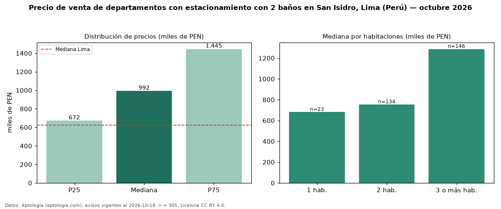

Precio de venta de departamentos con estacionamiento con 2 baños en San Isidro, Lima (Perú) — octubre 2026
PEN 992.000 es el precio mediano de departamentos con estacionamiento con 2 baños en venta en San Isidro, Lima (Perú) (n = 305 avisos). Frente a la mediana de los departamentos con estacionamiento en venta de San Isidro (PEN 1,13 millones, n = 617), queda 12 % por debajo; este segmento reúne el 49 % de esos avisos. Por metro cuadrado, la mediana es PEN 8.673/m² (n = 295), 1 % por debajo de los departamentos con estacionamiento en venta de San Isidro (PEN 8.739/m²). El área mediana anunciada es 114 m². El segmento con más oferta es el de 3 o más habitaciones (146 avisos, mediana PEN 1,29 millones); pasar de 1 habitación a 3 o más habitaciones cambia la mediana +89 %. La mitad central de los avisos va de PEN 671.760 a PEN 1,45 millones (razón 2,2), una dispersión alta. La mediana de todos los departamentos en venta de Lima es PEN 621.600 (+60 % de diferencia). Datos: Aptología (aptologia.com), CC BY 4.0 — https://www.aptologia.com/pe/venta/lima/san-isidro. Archivos: PDF, CSV con las cifras y gráfica PNG.

| Avisos únicos | 305 |
|---|---|
| Percentil 25 | COP 671.760 |
| Mediana | COP 992.000 |
| Percentil 75 | COP 1.445.000 |
| Mediana por m² | COP 8.672 |
Fuente: avisos vigentes de portales inmobiliarios recopilados por Aptología, deduplicados (mínimo 30 avisos únicos por celda). Precios pedidos, no cerrados. Fecha: 2026-10-18.